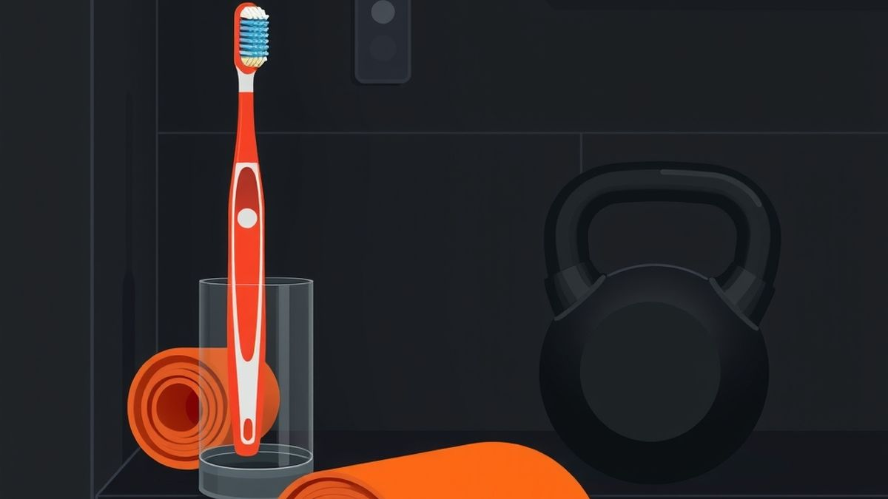
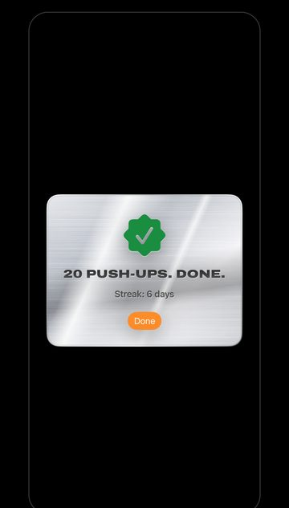

The 10-Rep Rule: Habit Stacking Exercise That Sticks
Habit stacking exercise works when the anchor is exact and the set is tiny. What the research really says, why 10 reps is the rule, and stacks to start.


TL;DR
- Habit stacking exercise means attaching a short set to something you already do daily: "After I [anchor], I will [set]."
- Habit stacking itself is barely studied, but its building blocks (if-then plans, repetition in the same context) have solid evidence.
- Frequency builds the habit, so keep the set tiny: about ten reps, under a minute, doable on your worst day.
- Pick one precise, daily anchor at home and do the set immediately after it.
- Ten reps is the floor, not a full plan. Grow it once it's automatic.
You read about habit stacking and wrote it on a sticky note: "After I start the coffee, I do a 20-minute workout."
Day one, you did it. Day two, you did 12 minutes. Day four, the coffee brewed, you picked up your phone to check one thing, and the coffee was cold when you looked up.
The stack didn't fail. The thing you put on top of it was too heavy.
Habit stacking exercise works on one condition: the set you attach has to be small enough to do on your worst morning, in whatever you slept in, in under a minute. For most people that's about ten reps. Call it the 10-rep rule. It sounds too small to matter. That's the point.
What habit stacking exercise actually is
Habit stacking means attaching a new habit to one you already do every day, using a simple sentence: "After I [current habit], I will [new habit]." The phrase was popularized by James Clear in Atomic Habits. It borrows from BJ Fogg's Tiny Habits method, which uses the same "After I…" recipe with three parts: an anchor (the existing routine), a tiny behavior, and a small celebration right after.
For exercise, that looks like this:
- After I start the coffee maker, I do 10 push-ups against the counter.
- After I brush my teeth at night, I do 10 squats.
- After I plug my phone in to charge, I hold a 20-second plank.
The existing habit does the remembering for you. You don't have to find time or decide to work out. The coffee maker starts, and the next thing is the set.
Does habit stacking work? The honest answer
Here's what most articles on this skip: habit stacking itself has barely been tested. Wharton behavioral scientist Katy Milkman has pointed out that, for how popular it is, there's hardly any research on it, and no large, well-designed studies showing it works.
The one study usually cited is small. In 2013, researchers asked 50 people to start flossing, half before brushing their teeth and half after. Four weeks later, the "after brushing" group had stronger habits. It was exploratory, and a later, larger study by the same lead researcher (118 people) didn't find that the order made a difference.
So why recommend it? Because the parts it's built from are well studied.
If-then plans have real evidence
Psychologists call a plan like "when X happens, I'll do Y" an implementation intention. A 2006 review pooled 94 tests and found these plans had a medium-to-large effect on people reaching their goals. For physical activity specifically, the effect is smaller: a 2013 meta-analysis of 26 studies found a small-to-medium boost, which held up at follow-up.
A habit stack is an if-then plan with a very specific "if": something you already do every day.
Habits form from repeating in the same context
Habit researchers define a habit as an action that gets triggered automatically by a cue you've linked it to through repetition. Their practical advice to doctors is to pick one simple action and repeat it in the same situation until it feels effortless. That's habit stacking with less marketing.
How long that takes varies a lot. In a well-known 2010 study of 96 people, the median time for a new daily behavior to feel automatic was 66 days, with a range from 18 to an estimated 254. Missing one day didn't meaningfully set people back. Being inconsistent did.
Why 10 reps is the rule
The research above all points the same way: the habit gets built by doing it often, in the same moment. Nothing about it says the set has to be big. Big sets just make it easier to skip.
A study that followed 111 new gym members for 12 weeks found that exercising at least four times a week for about six weeks was the minimum needed to establish an exercise habit. Frequency was what built it. That's hard with hour-long workouts. It's easy with a set that takes 40 seconds.
Ten reps works because:
- It survives bad days. Tired, sore, running late: you can still do ten. That's the same idea as adjust, don't miss, built in from day one.
- It needs no setup. No changing clothes, no shower, no sweat. If a set needs a gym bag, it's not a stack, it's an appointment.
- It's still real effort. Ten push-ups or squats is a genuine set for most beginners. In a small 2022 trial, untrained students who did a single three-second maximal muscle contraction once a day, five days a week, for four weeks gained measurable arm strength (the lowering-type contraction worked best). It was tiny (13 people per group) and tested only the biceps, but it shows small daily efforts aren't nothing.
- It's a floor, not a ceiling. On good days, do more. Ten is what you promise; anything extra is a bonus.
To be clear about what ten reps isn't: a full fitness plan. US guidelines recommend muscle-strengthening activity for all major muscle groups at least two days a week, plus regular aerobic activity. The 10-rep stack is how you become someone who moves every day. Building on it comes after, with ideas like exercise snacks or greasing the groove.
How to build your habit stack
The anchor matters more than the exercise. A good one happens every single day, including weekends, at a precise moment ("after I start the coffee maker," not "in the morning"), in a place where you can actually move, and is followed by a free minute.

| After I… | I will… | Easier version |
|---|---|---|
| Start the coffee maker or kettle | 10 push-ups, hands on the counter | 10 wall push-ups |
| Brush my teeth at night | 10 bodyweight squats | Sit down to the edge of the bed and stand up, 10 times |
| Plug in my phone to charge | A 20-second plank | Plank with knees down, or hands on the bed |
| Close my laptop for the day | 10 squats | Squat to a chair |
| Get back from a walk or commute | 10 sit-ups | 10 crunches, or 5 slow sit-ups |
Then set it up in five steps:
- Pick one anchor. Just one for the first two weeks. Two new stacks at once means two chances to forget.
- Write the sentence. "After I start the coffee maker, I do 10 counter push-ups." Put it where the anchor happens.
- Do it immediately. The set comes right after the anchor, before your phone, before anything else.
- Mark it. Fogg's method ends each tiny habit with a quick moment of feeling good about it. A "done," a fist pump, a tick on a calendar. It sounds silly. Do it anyway.
- Grow it slowly. When you're hitting it on most days without thinking, add a few reps or a second anchor. Not before.
Form cues and safety
Ten fast, sloppy reps don't help. Keep it controlled:
- Push-ups: hands under your shoulders, body in one straight line from head to heels, lower until your chest nears the counter or floor. The higher your hands, the easier it gets. More in How to Do Your First Real Push-Up.
- Squats: feet about shoulder-width, heels down, knees tracking over your toes, sit back as if to a chair. See bodyweight squat form.
- Plank: elbows under shoulders, hips level, keep breathing.
Muscle burn is fine. Sharp pain or joint pain means stop. If you're pregnant, have a heart condition, high blood pressure, an injury, or haven't been active in a long time, check with a doctor first and start with the easier versions.
Why habit stacks fail (and the fix)
- The anchor is vague. "In the morning" isn't a cue; it's a three-hour window. Fix: tie it to one physical action.
- The anchor isn't daily. "After I get to the office" disappears on weekends and sick days. Fix: pick something that happens at home, every day.
- The set is too big. If you've skipped it twice in a week, it's too big. Fix: cut it in half. Five reps beats zero.
- The phone gets there first. The anchor happens, you pick up your phone "for a second," and the moment is gone. Fix: make the set the first thing after the anchor, or make the phone itself the anchor.
- Nobody reminds you. In the flossing study, people with better everyday memory flossed more often. Remembering is the weak link in any stack. Fix: a cue you physically can't miss.
Questions people ask
What's the best exercise to habit stack?
The one you can do in that spot, in those clothes, with no warm-up. Counter push-ups and squats work almost anywhere. Save floor exercises for anchors near a clear bit of floor.
How long until a habit stack is automatic?
There's no fixed number. In the 2010 study, the median was 66 days, but it ranged from weeks to most of a year. Expect around two months, and don't panic about one missed day.
Is 10 reps a day enough to get fit?
On its own, no. It's enough to build the habit, and it's real work for a beginner. Once it's automatic, add reps, sets or anchors until you're doing strength work on at least two days a week.
The anchor that's always there
Every stack has the same weak spot: you have to remember. The one habit almost nobody forgets is picking up their phone.
That's the anchor Rep Rot uses. It locks the apps you lose hours to until you get up and move: when you hit your daily limit on an app, it stays locked until you do your set, counted by your iPhone's camera. Your morning alarm works the same way, and stops only after your reps. Push-ups, squats, sit-ups, pull-ups or a plank. Real movement, counted right on your phone. No faking it.

To be straight about it: Rep Rot can't see which apps you pick or how you use them (Apple keeps that private), and Screen Time limits can be bypassed by someone determined. It doesn't replace your coffee-maker stack. It adds one more you can't forget. Rep Rot has a free plan and a 7-day Pro trial, and it's in testing now: email help@reprotapp.com for early access.
Sources: Gollwitzer PM, Sheeran P, "Implementation intentions and goal achievement: a meta-analysis of effects and processes", Advances in Experimental Social Psychology (2006); Bélanger-Gravel A, Godin G, Amireault S, "A meta-analytic review of the effect of implementation intentions on physical activity", Health Psychology Review (2013); Gardner B, Lally P, Wardle J, "Making health habitual: the psychology of 'habit-formation' and general practice", British Journal of General Practice (2012); Judah G, Gardner B, Aunger R, "Forming a flossing habit: an exploratory study of the psychological determinants of habit formation", British Journal of Health Psychology (2013); Judah G, "An investigation into the psychological determinants of health habit formation", PhD thesis, LSHTM (2015); Lally P et al., "How are habits formed: Modelling habit formation in the real world," European Journal of Social Psychology (2010), summarized by the British Psychological Society Research Digest; Kaushal N, Rhodes RE, "Exercise habit formation in new gym members: a longitudinal study", Journal of Behavioral Medicine (2015); Sato S et al., "Effect of daily 3-s maximum voluntary isometric, concentric, or eccentric contraction on elbow flexor strength", Scandinavian Journal of Medicine & Science in Sports (2022); Katy Milkman on habit stacking, via the Association for Psychological Science; BJ Fogg's Tiny Habits recipe (anchor, tiny behavior, celebration), as used in a Stanford Medicine handout; James Clear on the habit stacking formula, Entrepreneur (adapted from JamesClear.com); Physical Activity Guidelines for Americans, 2nd edition.